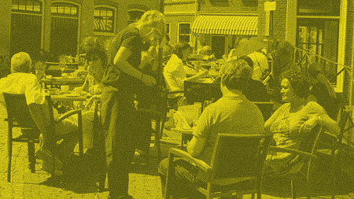

Field studies
What is important is not what you hear said, it's what you observe. – Michael Connelly
A field study is method for collecting data about users that involves ethnographic observations in the field and interviews. Researchers in the field observe users in the fitting environment and note activities, tasks, inefficiencies, problems and other things that are related to the study.
Field study: A girl is out in the real world observing and understanding real human beings behaviors.
Observations can be either direct or indirect, where the researcher is either present in the environment or observing remotely through video etc. It is a useful approach for studying tasks and processes as well as being able to identify details that users might have trouble expressing themselves.
Field study: Go out in the real world – make the exotic known and the known exotic.
Field studies in industry
MTT UX team exampleThe MTT UX team made use of field studies in their research of the airport experience. They spent a series of days monitoring and observing traveller behaviour in the different stages of their travel. They also made use of interviews, surveys and shadowing. They highlight that a field study is an excellent way of gathering first-hand insights with little to no bias as well as observing commonalities between the users. They note that the process can be very time consuming and that you’re at the mercy of the environment - you can’t plan and control the studies.
Field studies at DMD
In the course “Qulitative Research Methods and Academic Communication” (autumn 2015) a group had to qualify smartphone usage. Part of the methods used was Participant Observation, where the group went out in the field to observe smartphone users within the project’s target group. They elaborate in their abstract:
By qualitatively examining usage patterns of smartphone users through diary studies, participant observations and focus group interviews, we explore the complexity and nuances of smartphone usage of four participants. We learn that smartphone usage is very individual and well integrated into the daily lives of our participants, without necessarily being a nuisance to them.